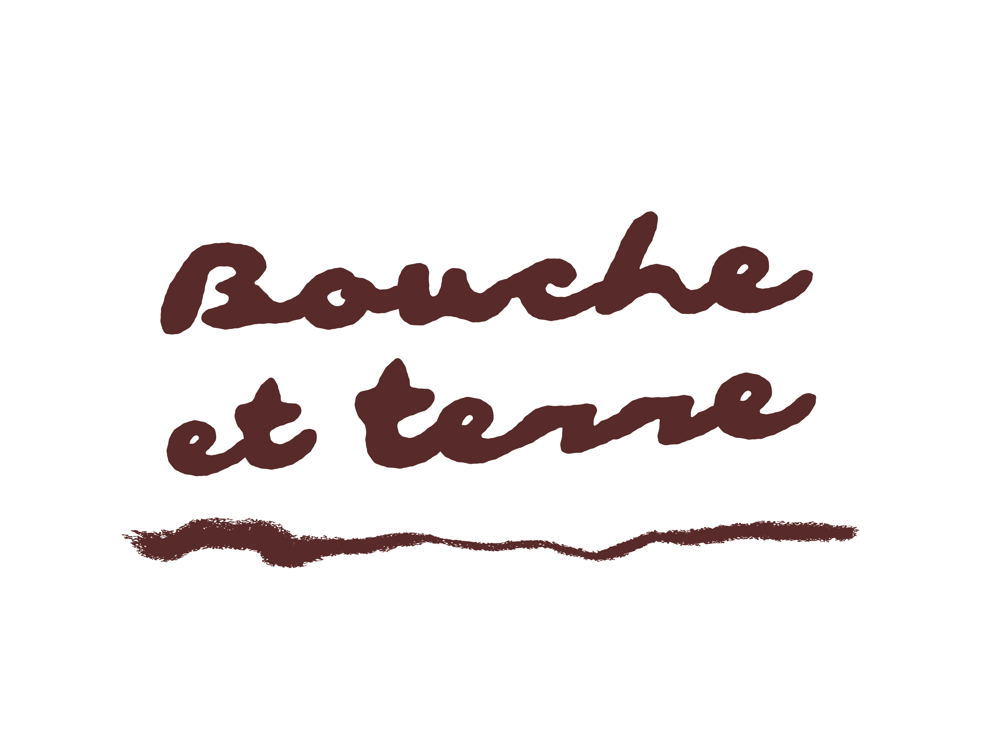
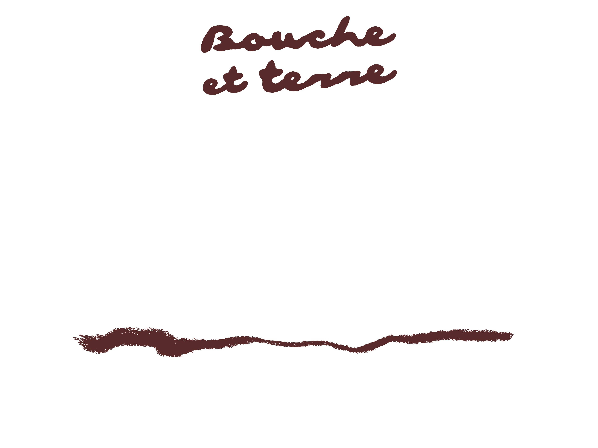
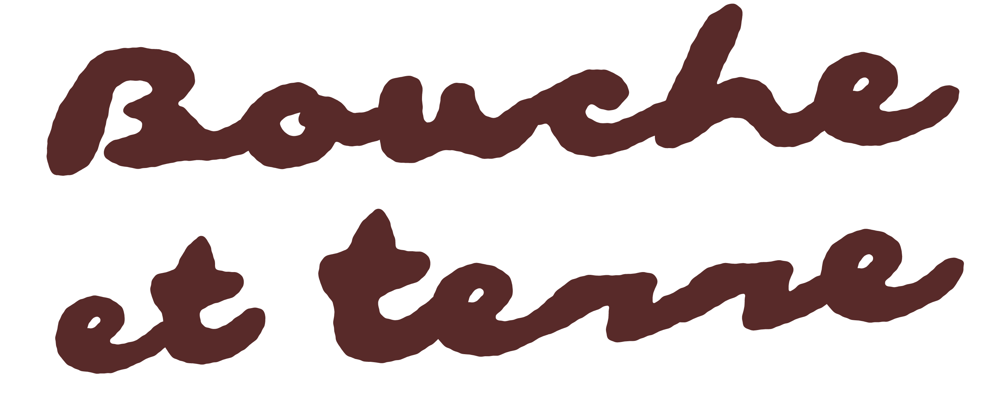
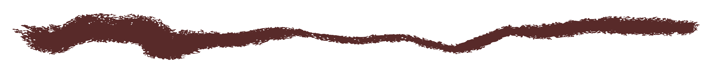
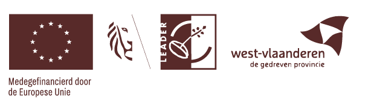

Bouche et terre is genuinely curated by the soil and soul of
Ceci est Passata & Le Monde des Mille Couleurs


Wonder Wilder Farmer Fest
Sunday 4.10.26 10H — 17H
Le Monde des Mille Couleurs
Zweerdstraat 6 8900 Dikkebus
Wonder Wilder Farmer Fest
Sunday 4.10.26 10H — 17H

Le Monde des Mille Couleurs
Zweerdstraat 6 8900 Dikkebus
Bouche et terre is not a festival you attend. It's one you become.
Vertraag. Vel tegen vel(d). Maak je handen vuil. Eet iets echts.
We're talking soil under your nails, smoke in your hair and feral
flavours that make you forget what a supermarket looks like.
A sunday rooted by wildfarming, foodforestry, passata poetry, dirty dancing, son et lumière - on a living field where la terre a encore
des choses à dire.
Le nouveau sauvage, from soil to soul,
with blooming courage, feet in the ground and hearts wide open - where nature transcends.


Curated by Ceci est Passata & Le Monde des Mille Couleurs